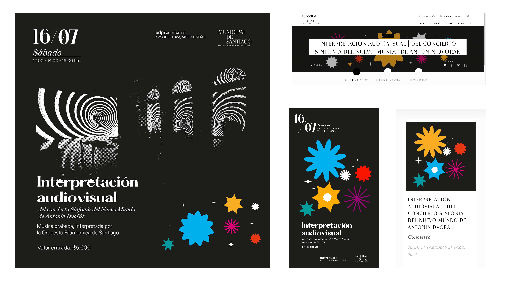
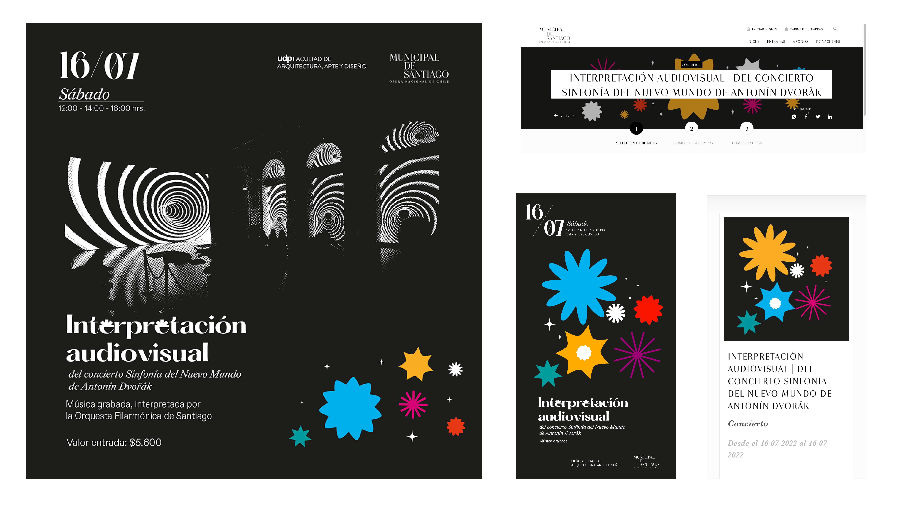

Desliza para descubrir
La identidad visual fue trabajada bajo el concepto Hechizo, el cual representa la reacción del público al observar las proyecciones. Ya que la atención de la gente fue cautivada al notar como el ritmo de la animación y la sinfonía se sincronizaban.
 
